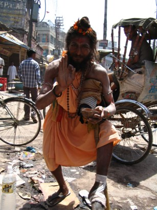
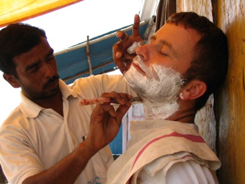
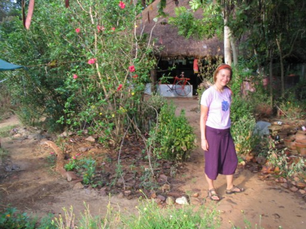

We arrived in Delhi at 2am, and were pleasantly surprised that there were no frantic hopping taxi drivers vying for our business. We were lucky enough to be picked up by someone from our hotel, so zoomed straight off into the damp, cool Delhi night. After filling in several forms, each in triplicate, giving our passport and visa details, home address, occupation, shoe size, father’s middle name and various other bits of spurious information, we finally fell into bed at around 4am. We planned to sleep late, but India would not let us rest. We were woken at 6am by the early morning ‘retch-your-lungs-up’ chorus, common throughout India.

Everyone here wants your money. Even an innocent request at the hotel for a map of Delhi ended up in us being taken through muddy back streets, past cows and cycle rickshaws, hopping over cowpats and muddy puddles to a tourist agent where they tried to sell us a package tour of India. Quickly escaping into a café and sipping a chai, an innocent conversation with a local ended up in an auto rickshaw to a ‘genuine’ tourist office, and, before we knew it had a driver called Surender for the next six days. The car was a little white number, innocuous enough, except for the embarrassing ‘tourist’ written on each side!
The centre of Delhi was mad, cars, camels, bikes (lots of Royal Enfields), rickshaws, pigs, an elephant, and cows plonked in the middle of the busiest intersections. Tacked to one side of an overpass were around ten rickety stables and a muddy area where kids where galloping horses, it was like peering into the countryside.
We drove from Delhi through the Rajasthan countryside, passing the most amazing vehicles. We saw trucks with loads so enormous that you couldn’t see the truck itself from behind, only sacks bulging in every direction. There were carts pulled by camels, and others pulled by buffalos with painted horns. The Indians seem to love decorating their vehicles, so most trucks had beautifully painted swastikas and ‘om’ symbols. They also had cryptic messages, exhorting other drivers to ‘Horn Please’ and ‘Wait For Side’! It’s not clear what these messages mean, but other drivers certainly horn please, with ear-deafening volume and brain-draining continuity.
This is summed up beautifully in the book Bombay to Beijing by bicycle by Russell McGilton-Anachonistic in appearance, the TATA trucks haven't changed their design since India's independence in 1947. Each is armoured together and looks like an aging elephant-large mud guards, eyes painted under the headlights to ward off bad luck, decorations of a karmic afterlife emblazoned on the sides, plastic flowers climbing over the cabin, wisps of burning incense curling over pictures of deities, while a growling motor strains under the weight of the truck's billowing cargo.
In Jaipur, we set off to see some of the sights. The first stop was ‘Jantur Mantur’, an ancient astronomical observatory, built by one of the Maharajas. It was used to calculate the suns movements through the zodiac, for telling the time accurately and planning auspicious dates for important occasions. It looked like skate park-cum-modern art exhibition, and was dwarfing in its size. The gnomon of the sundial stood at 90feet high and told the time with an accuracy of within 2 seconds. We really were walking inside a giant computer.
We then went off on a round of palaces and forts. We saw elephants with painted faces, ambling up the hillside, sometimes carrying alert tourists, sometimes carrying sleeping handlers.
In the evening, we decided to go to the cinema to see a Bollywood film. The film, ‘Bewafa’ was an uninspiring story about an Indian woman doing her proper duty, but the cinema itself was amazing. If there is one place to see a Bollywood film, the Raj Mandir Theatre in Jaipur is the one. The grand foyer is lit by dangling chandeliers, a sweeping staircase rises to the left, sparkling mirrors line the walls. The snack bar serves samosas and lassi, and everyone is dressed in their best clothes (except us, of course). We waited with baited breath for the doors to open, then everyone rushed to their seats as the film started almost before you could sit down! Throughout the film Indian life continued as normal, with babies crying, people having conversations and mobile phones ringing and beeping.
This is a national park which is home to some of India’s few remaining tigers. We arrived at a nice hotel and our backpacks where whisked away to our room with Gollum-like service. At least there was a swimming pool to cool off in. We went on a sunrise safari in a small jeep the next day, with a too-fast driver and a too-blind guide. We quickly realized it was a holy day for Ganesh as, instead of seeing tigers in the wild, we saw lots of villagers making a long, barefoot pilgrimage to the forest temple. We did see antelope, deer, jackal and a wild boar, but only at speed as we rushed past in our fruitless search for tigers.
This is the centre for the Hare Krishna movement and there is an amazing temple with a constant buzz of dancing and singing. It surrounds a lovely courtyard and reminds me of an ancient Greek temple, except for the devotees flopping flat on the floor and crawling along in one long prostration like giant orange slugs. Everyone here is a Hare Krishna, the entire town is vegetarian and alcohol free. Everyone greets with a ‘Hare Krishna’, beggars hold out their hands and say ‘Hare Krishna’, and the guard to our hotel was constantly mumbling ‘Hare Krishna’. We went on a pilgrims walk about town, which passes through the area where Lord Krishna dances with the gopi cowherd girls. We felt like we were the only non-devotees and crept around like imposters, especially in the Bhagavad Gita class we attended where we kept our heads lowered as everyone took it in turns to sing the Sanskrit verse.
Indian bureaucracy reared its infuriating head even here. As we left in the car, the security guard made us fill out a ‘Gate Pass’ form, tore off a slip and gave it to us then, as we drove past a minute later, we had to give it back to him. All this despite the fact that there was no gate!
We spent just long enough in Agra to visit the Taj Mahal, which really is very beautiful, but is inordinately expensive to visit. Foreigners pay 750 rupees (about £9), made even more galling by the fact that Indians pay only 20 Rupees (about £0)! There isn’t much to say about the Taj Mahal that hasn’t been said more eloquently by someone else, so we will let pictures suffice.
One funny story though: we were sitting quietly while Sam sketched. Before long a crowd of Indians had gathered around us, all of whom proceeded to ‘helpfully’ point out to Sam that he’d missed a bit here, needed to do some work there. Indians, it seems, are experts at everything!
We left our driver behind in Agra, and took the train to Bodhgaya. An endless stream of touts calling out their wares punctuated the 12hourjourney: ‘chai, chai, chai, chai’, ‘juice, juice, juice’ and ‘tomato soup, tomato soup, tomato soup’. Every time one of these wallahs went past our little curtained compartment, the curtain was pulled back and an enquiring face peered in – ‘Soup?’.
The train arrived late into Gaya, at 1.30am. This was worrying, but the station was packed with people. It was like a festival or the aftermath of some disaster, with bodies sleeping everywhere, some curled protectively around meagre belongings. We were pleased to find it remarkably hassle free though. We were offered a ride in an auto rickshaw, and hopped in behind our boy-racer driver. He sped through deserted streets (except for the ubiquitous cows) with Bollywood soundtracks blaring at eardrum-splitting volume and I cracked my head as he raced over the big bumps. His wayward ways were soon diminished though as the local police (each equipped with a big stick and a rifle) pulled him over. We expected to be fined, but after a sullen conversation we were soon on our way again.
Bodhgaya is a small town, famous as the place where Buddha achieved enlightenment beneath the Bodhi Tree. A large temple now stands around the tree, where devotees perform strange rituals. As the wind blew, leaves fell from the trees and people scurried about collecting them. Others prostrated themselves on wooden boards, then stood again, repeating their prostrations rapidly like some weird holy yoga workout. Other followers squeezed themselves into narrow spaces, where they reeled off mantras, counting them off on strings of beads. Around the walls of the temple, beggars push their bowls through gaps in the railing.
Around the town, Buddhist temples have been erected by all the major Buddhist nations, so Japanese architecture rubs shoulders with a Bhutanese temple, which nudges up against the Tibetan Monastery. Tibetans and foreigners take over the town during the winter as the Dalai Lama spends some months here every year.
In our attempt to understand Buddhism, we enrolled for a vipassana meditation course. This involves no talking, no looking at anyone, no eating after midday, and no reading or writing. Everything is to be done mindfully, in the moment.
Our schedule was as follows:
5am-wake up
5:30-sitting meditation
6:30-breakfast
7:30-walking meditation
8:00- sitting meditation
9:00-bathing
10:00- sitting meditation
11:00-lunch
1:30- sitting meditation
2:30-walking meditation
3:30-lemon and glucose tea
4:00- sitting meditation
5:00-discourse and walking meditation
7:00-lemon and glucose tea
8:00- sitting meditation
9:00-meditative rest
10:00-sleep
Due to time restraints we only stayed for three days (although apparently, one guy had been there 3 months!). It drove us nuts and was like a mental enema.
Why is it so spiritual here? Well, it is the only place in India where the sacred Ganges river turns to flow north, and north is good. There are pilgrims here from all over performing puja (ritual), Yoga, bathing, drinking and spitting the water at each other. By our standards, the water's extremely dirty, exceeding 5000 times the World Health Organisation's standard.
We stayed at Yogi lodge, which was the friendliest hostel we'd encountered since Ayers Rock five months ago. We watched an evening puja involving lots of ringing bells, incense, and guys dancing with fire. You could buy floating candles to set free along the river and, after several hours, the river was alight with a procession of these little flames following the course of the water. The next day we took an early boat with some friends to catch the sunrise and gave us the opportunity to see more rituals, a cremation, and the odd floating body drifting by (they don't cremate saddhus, pregnant women, and children). Our peace was broken by the occasional touts rowing up to us to sell things although the funniest was selling DVDs and had a widescreen TV and battery powered DVD player blasting out the latest movie from this old rowing boat.
Our early morning Ganges trip, punctuated by the DVD salesman
This festival heralds the start of spring and is celebrated by throwing coloured paint over everyone in range. The locals get off their heads on pot and alcohol and it wasn't advised for us to go outdoors as things can get a little out of hand. Nevertheless, we were prepared with paint loaded waterbombs, water pistols and a water cannon and had a great time bombing people from the rooftops and having a cross-rooftop battle. We couldn't refill our ammo fast enough before a well placed projectile would come screaming towards us and drench us in colour.
Some of our fellow travellers who got caught in the cross-fire
Many stalls were set up to sell the colour-bombs, and a Holi cow
Most sane travellers with less than two months to spare in India would concentrate on either the north, or the south. Fortunately, we don't fall into that category, and besides, we wanted to participate in a Krishnamurti discovery weekend in Chennai and see the old colonial French Pondicherry. We took our thirty hour train ride in a compartment with four Indian men. It's a great way to meet the locals, as up until now, the only Indians we met were trying to extract as much money as possible from us. But here we were, on common ground, all on a long journey. Most of the time was spent looking out of the window and watching the scenery change to lush jungle, bridges over wide rivers, grass huts and cows with painted horns tipped with brass bells. The seats of the compartment folded into two sets of three tier bunk-beds and were quite cozy as the rocking of train lulled us to sleep. Each carriage had a guard who looked after delivering our food, making sure we got off at the right stop and preventing the wrong sort of people entering. That, coupled with the metal loops welded beneath the bunks to which we padlocked our luggage, made us feel quite safe.
Pondicherry still had its quaint French appeal, streetnames in French, French signs, and French bread shops. We stayed over in Sri Aurobindo's ashram. This guru, along with his sidekick, known as 'The Mother', founded 'Auroville', a large international community that was to be our next stop.
Auroville. founded in 1968, is a community of 35 nations, all age groups, social classes and backgrounds and has been heralded by UNESCO as a project of importance to the future of humanity. There are around 2000 people living there, growing their own food and generating power through solar electricity. They are using the latest technologies for self-sustainability. I (Sam) had e-mailed a few of the engineers there a few weeks earlier to see if they required any engineering help and got a first-hand experience of the technology involved. We arrived from Pondicherry by autorickshaw and, after a brief introduction at the visitors centre, were whisked on our way by an electric vehicle to the 'Solar Kitchen'. This kitchen cooks up to 2000 meals a day and derives most of its cooking power from a huge parabolic reflector that tracks the sun, turning water into steam which is used to cook. I got involved with improving this device during my stay.
The centrepiece of Auroville is the Matrimandir, a golden temple with meditation chambers, a huge crystal inside, and networked LED lighting with the ability to light the interior with any colour. During daylight, a mirror on the top of the temple will track the sun and direct its rays into the centre of the crystal and downwards to a pool underneath. This temple is currently being rebuilt but I was one of the lucky few to get a view inside due to my work.
I (Helen) found a wonderful place to contribute work. 'Solitude' is an organic freehold where all their own food is grown and solar power is used for lighting and pumping the water from the well. I got involved in the gardening, and squished about barefoot in the lovely mud! I have been quite inspired and plan to get my own garden going at home - pumpkin soup anyone?!
We stayed in beautiful gardens of the walled compound of the >Krishnamurti retreat. We learned about his teachings, the essence of which is regarding moment to moment awareness, and really listening to people without any prejudice. We came away refreshed by his teachings and experienced Chennai with revived eyes.
India is full of beggars, and, although we ended up ignoring most of the pleas, one young girl struck a chord as she wanted medicine for her sick mother in hospital. I got a list of the medicines from her and verified them with the chemist that they were for heart complaints before buying them and giving them to her. I then got out my camera to take some photographs when I was swamped by kids from the street, all wanting their photos taken. The advantage with the digital camera is that it's no problem to do this, and they love looking at their photographs. So here are a few pictures from that day.
This is a sleepy holiday town where the main product is stone carving. You can hear the sounds of chisels from very early in the morning to late at night whilst the stonemasons carve out the latest fashion of Ganesh postures. We also noticed that the householders trace out lovely geometric designs on the pavements using coloured salts first thing in the morning. These resemble Celtic designs and are probably a good luck charm for the day.
Around Mamallapuram
Around Rishikesh
To get to this town in the far north we took the night train to Haridwar. This left at 5am and it was strange moving through a sleepy Chennai. Many people sleep on the streets and on the carts they use to sell goods and we had to pick our way around them whilst trying to rouse an autorickshaw driver to take us. The station however was buzzing, drivers polishing their Ambassador cars, a hand-powered bike turned into a chai stall doing a roaring trade, and the police lazily moving sleeping people off the platform. We spent three nights on the train and shared our days with a nice Indian family.
Visions of Rishikesh
Rishikesh was made famous when the Beatles studied Yoga at Maharishi's Ashram. It's a beautiful town with the Ganges flowing in the middle and spanned by footbridges (with the odd cow looking lost). It's a very holy place and Yoga ashrams are all over the place. Many people make a pilgrimage here and, looking out from a good cafe vantage point, we'd see bizarre tribes of all different types of people coming through. Groups of old women all with tatooed arms, guys with pink turbans and jalopies-resembling a traditional Greek soldier, and babies with black eye-liner and a little tuft of hair at the back. It was more varied than people at a festival. We didn't exactly get into the spirit of mindfully bathing in the Ganges, instead we signed up for a white water rafting adventure for three hours of rapids riding and we sped through Rishikesh with all six of us paddling in unison. We also spent a day wandering the incredible ruins of Maharishi's ashram, it's deserted now, but a beautiful overgrown lawn is still there and there are around one hundred little space pod-like self contained meditation-cum-living areas for the ashram visitors.
The ruins of the Maharishi ashram
We spent a week here, bathing in the Ganges, and trying out different Yoga techniques. Peaceful as it was, we caused a fight when we left as several autorickshaw drivers were touting for our business, we pushed through the mess and, getting into another rickshaw, looked behind to see the drivers punching each other-they didn't even notice we'd gone!

We returned to Delhi and buiried our new found spirituality in a last minute shopping spree. This was our last stop and our chance to go mad and spend-something we hadn't been able to do all year. We left Delhi airport with huge bags crammed with stuff including a sitar and tabla in our hold luggage. We managed to get through customs okay and landed back in the UK, flying British Airways and supping a gin and tonic-welcome home!!!


Waking up to the cool, crispness of England, this trip has seemed like a dream. In dreams you never get cold and often meet new people. A sea of friendly faces has washed by over the year. We've missed passing pubs with the warm smell of vinegar and stale beer. And chip shops with divine fat chips and mushy peas swimming in vinegar, the fun of cooking for yourself and having friends around.